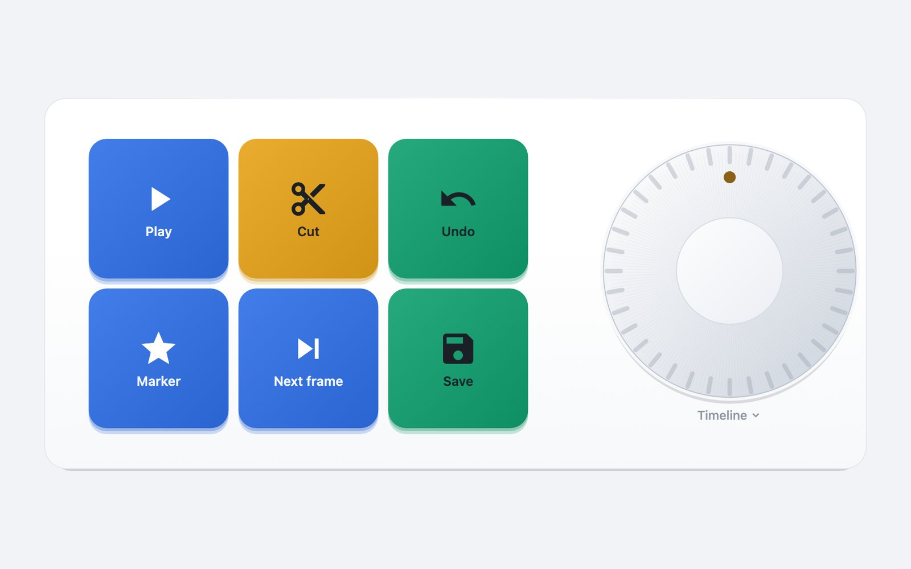
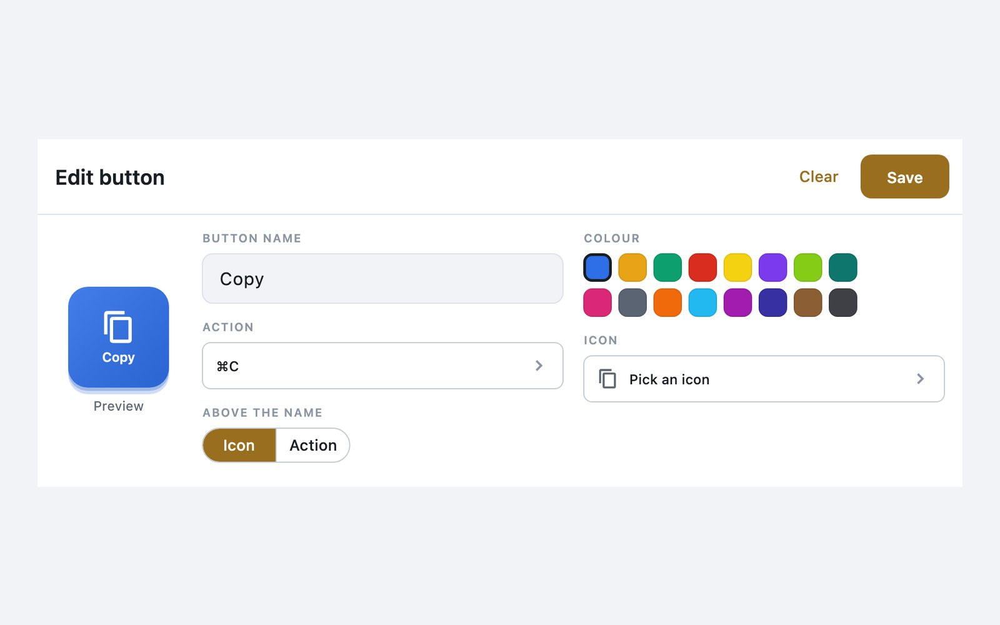
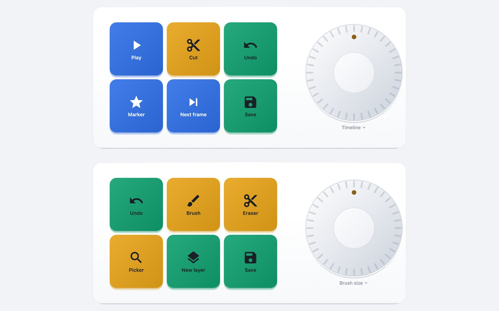

It follows the app in front
Link a pad to Final Cut, Photoshop, Safari or VS Code. When that app comes to the front, the phone switches to its pad; leave it and you land on the pad you chose, or stay where you were.
Buttons and a knob on your phone that press shortcuts, type text, open apps and run your scripts on the Mac beside you. Bring Final Cut to the front and the phone turns into Final Cut's pad.

The idea
A hardware pad holds one set of keys until you change it yourself. MacroKeyboard watches which app is in front on the Mac and swaps the phone's buttons to match — timeline keys in Final Cut, brushes in Photoshop. The pad is the phone you already carry.
What's in it
Link a pad to Final Cut, Photoshop, Safari or VS Code. When that app comes to the front, the phone switches to its pad; leave it and you land on the pad you chose, or stay where you were.
Turn it for the timeline, brush size or volume. Spin it fast and it takes big steps; lift your finger and it stops, instead of rolling on for seconds.
Tap record on the phone and press the keys on the Mac. No key codes, no hunting for the ⌘ symbol.
Type a line of text, open an app, play or pause, or chain steps: open the app, wait, press the shortcut.
Register a script on the Mac and the phone can run it by name. The phone never sends a command — only which button was pressed.
Pairing is a QR code on the Mac's screen. After that the connection is encrypted and pinned to your Mac, and a device you have not paired is turned away.

Where it came from
It started with one question: could a button on an iPhone press ⌘C on a Mac? The first build did exactly that, over the local network, in September 2026.
Everything after that was about not being dangerous. A phone that can make a Mac do things is a remote control for the computer, so pairing, encryption and a rule that scripts live only on the Mac came before any of the features above.
Then the part that makes it worth having: the pad follows the app in front. It has since run on an iPhone and on an Android tablet against the same Mac.
Privacy
The phone and the Mac talk to each other directly, encrypted, inside your own network — there is no server of ours in between and no account. Your pads and your pairing live on your own devices. The app is free and carries ads, so Google AdMob collects the usual advertising identifier and device information; what you press never goes to it. All of it is written out in the privacy policy.
The app is coming to the App Store and Google Play. The Mac agent it needs will be a free download from this page.
